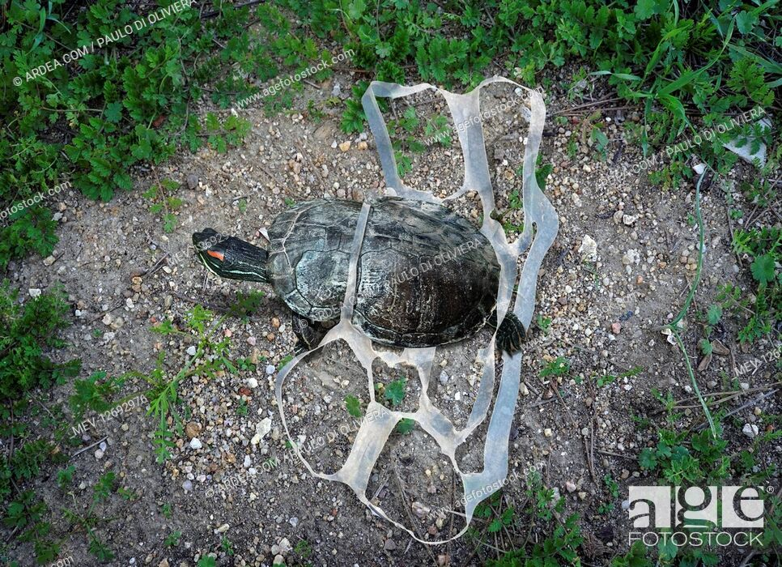
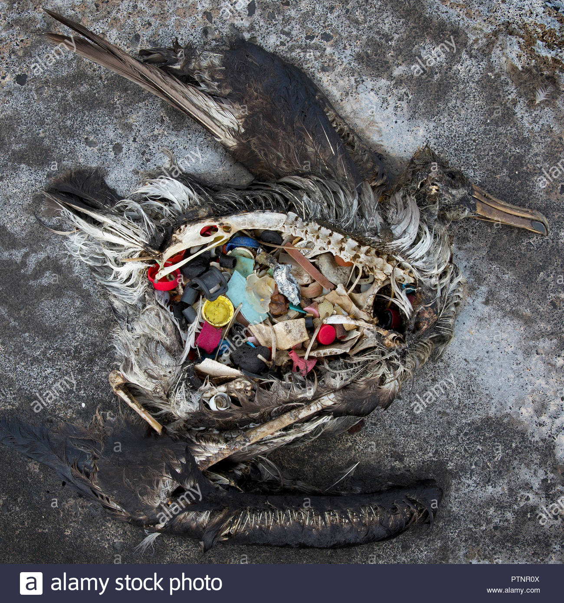

.jpg)
Plastics in the ocean has major affects on th environment and the organisms in it. Not only does it affect the health of sea creatures such as turtles, but it also affects birds and water quality. Micro plastics, tiny fragments of plastic that are sometimes hard to see, are found all over the world. Not just in the ocean, micro plastics have worked their way into different food chains and have even been found in human organs. Marine animals will see a tiny micro plastic as a small piece of food, and eat it resulting in health issues for the animal and effecting the other animals in it's food chain. Micro plastics are also bad for water quality because the emit bad toxins that pollute the water.
Turtles are vulnerable to plastics in the ocean because they see the plastics as small pieces of food. Brightly coloured plastics are very attractive to turtles because they look like bits of algae and sea sponge, so they are likely to eat it. This makes it likely for them to choke, as it might get stuck in their throats. Not only are they likely to choke, but this plastic goes straight to their stomach and accumulates there overtime. Sharp pieces of plastic can rupture the internal organs of the turtle, making it hard for them to eat food, and they may starve to death.
Birds are also greatly affected by plastics in the ocean because like turtles, they see a bit of plastic as a small colourful fish or other food. They then swallow this, causing them to choke and damage their throats. Like turtles, they
can eventually starve to death. The image above shows a dead bird whose stomach is filled with plastics.
We can help save these animals if we all work together and clean up our oceans.